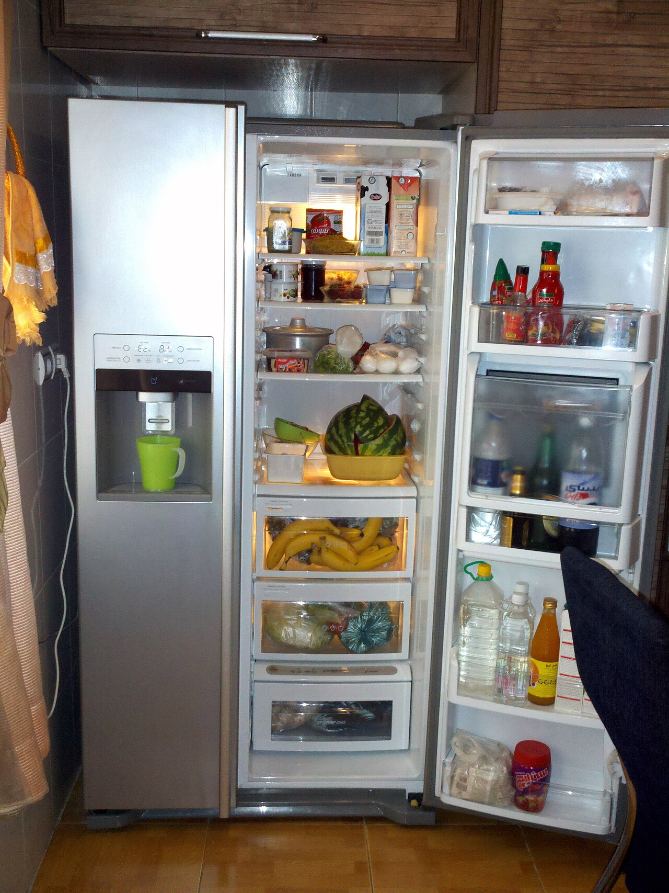
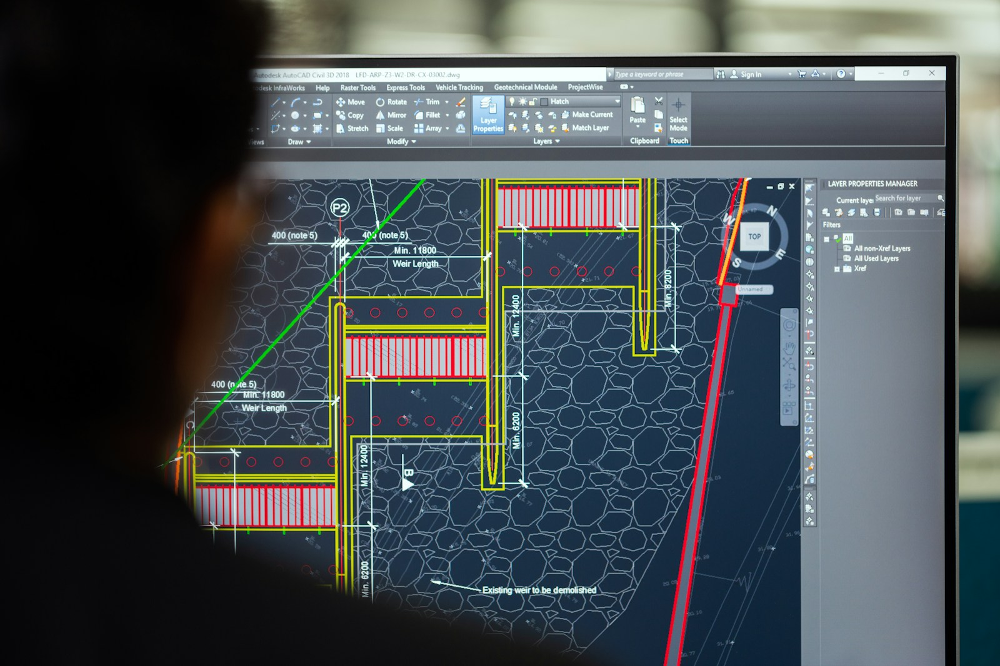
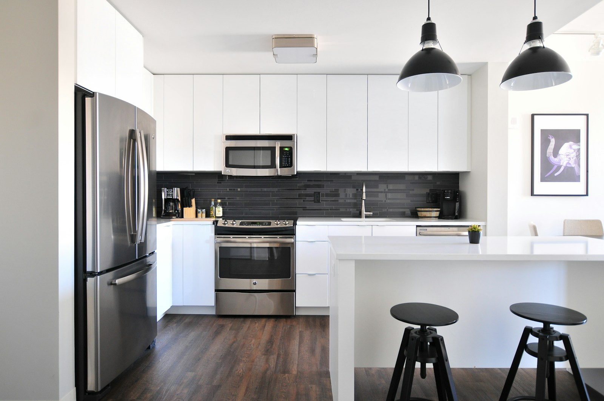

Refrigeration
Refrigerator Repair
Evaporator fan motors, defrost thermostats, compressor inverter boards, and ice makers.
Explore diagnosticsSelect your appliance to explore common fault symptoms, diagnostic testing steps, and certified technician availability.

Isolates intermittent electrical, compressor, and thermal failure modes before parts replacement.
You don't need to know the damaged part number. Describing the symptom helps our team arrive with the right testing instruments.
Refrigerator compartment warming, oven failing to hit target temperature, or dryer running cold.
Dishwasher standing water, washer failing to spin-drain, or water valve connection leaks.
Worn drum rollers, rattling blower wheel bearings, grinding pumps, or misaligned drive belts.
Flashing digital error codes, unresponsive control boards, or unexpected mid-cycle aborts.

Evaporator fan motors, defrost thermostats, compressor inverter boards, and ice makers.
Explore diagnostics
Drain pumps, pressure switches, door latch solenoids, and tub suspension dampers.
Explore diagnostics
Dual-coil heating elements, thermal limit fuses, drive belts, and moisture sensors.
Explore diagnostics
When an appliance fails, uncertainty causes stress. Our step-by-step dispatch process keeps you updated at every milestone.
We match a technician certified for your appliance brand and symptom profile.
Track your technician en route with estimated arrival times in your portal.
Review multimeter test findings and approve the itemized quote before work starts.
We provide honest recommendations. If an appliance is beyond economical repair, we tell you upfront.

If the complete repair cost is less than half the price of a comparable new model, repairing is almost always the economical choice.
Refrigerators typically last 10–14 years, laundry 8–12 years, and dishwashers 8–10 years. Early-stage repairs provide strong ROI.
Replacing a single worn wear-item (such as a pump or heating element) restores full factory efficiency for years.
If extensive multiple component failures make replacement smarter, our technician will clearly explain your options.
Follow your specialist's arrival in real time, view diagnostic checklists, and download itemized invoices directly from your dashboard.
Understand what happens during your in-home inspection, how parts are matched, and how our 90-day warranty applies.
Our customer specialists can look up your model number and error code before dispatch.
Speak With a SpecialistSelect an arrival window online or contact our local dispatch team directly.